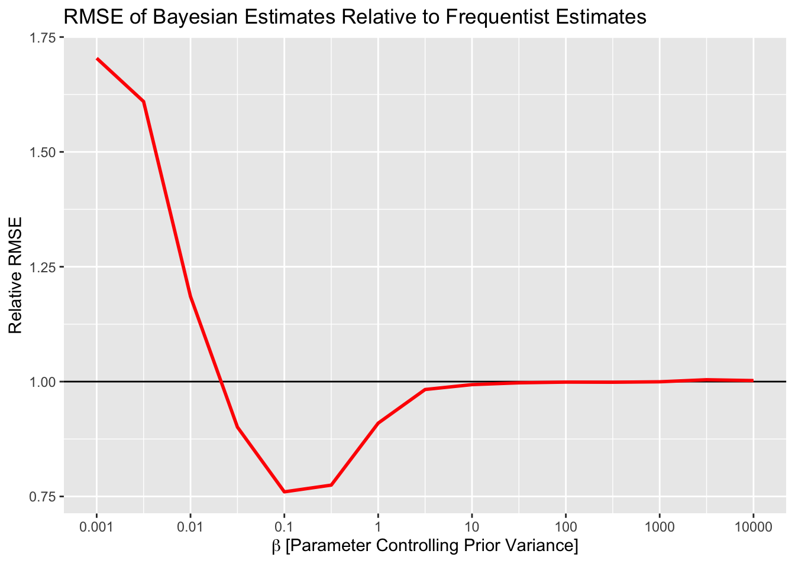

data{
int n;
vector[n] log_rr;
vector[n] stderr;
real beta;
}
parameters{
real mu;
real<lower=0> tau;
vector[n] z;
}
transformed parameters {
vector[n] theta = mu + tau * z;
}
model {
// No mu in the model block means a uniform prior over the domain.
tau ~ inv_gamma(3, beta);
z ~ std_normal();
log_rr ~ normal(theta, stderr);
}I recently wrote a blog post for my employer in which I made some claims regarding Bayesian statistics.
Claim 1: Flat Priors in Heirarchal Models Can Lead to Pulling Apart and Implausible Estimates
On flat priors in hierarchical models, Gelman says
A noninformative uniform prior on the coefficients is equivalent to a hierarchical N(0,tau^2) model with tau set to a very large value. This is a very strong prior distribution pulling the estimates apart, and the resulting estimates of individual coefficients are implausible.
By “pulling the estimates apart” I assume Gelman means “not pooling/regularizing estimates” as opposed to literally pulling the estimates apart. As for the line about “implausibility” of individual coefficients, that requires some unpacking.
Gelman is known for picking out poor methodological papers and commenting on them. Consider “The prior can often only be understood in the context of the likelihood” in which Gelman and authors discuss a study which ostensibly demonstrated that “beautiful” people are more likely to have a daughter.
You’re free to read what Gelman and authors wrote, I won’t summarize it here, but in short the authors to which Gelman refers report an unusually high differential in the probability of giving birth to a girl if you are a “beautiful” person. Given what we know about the sex ratio of births and how they vary across the globe, this seems fairly extreme. Reading between the lines, I would go so far as to say Gelman would consider this estimate as “implausible”. Hence, I interpret “implausible” to mean “no different than Frequentist estimates”. That is not to say that all frequentist estimates are implausible, just that when certain estimates should be shrunk/regularized, a hierarchical model with a flat prior would fail to do so.
This is fairly easily demonstrated. I’m going to simulate 16 A/B tests. Each test is powered to detect a lift of 5%. However, each of the lifts from the 16 tests is drawn from a normal distribution with mean 1 and standard deviation 0.02. This means that, while not impossible to see a 5% lift, it is highly improbable and often our tests are underpowered for the true effect. This, as I understand it, is the prevailing attitude in A/B testing.
Each A/B test will be fed to a hierarchical model (shown below in Stan). I place a flat prior on the population mean and parameterize the prior on the population variance so that I can study how estimates change when the prior is less/more variable.
Code
library(tidyverse)
library(cmdstanr)
library(tidybayes)
set.seed(0)
control_conversion <- 0.1
target_lift <- 1.05
target_conversion <- control_conversion * target_lift
design <- power.prop.test(p1 = control_conversion, p2 = target_conversion, power = 0.8)
n_per_group <- ceiling(design$n)
n_experiments <- 16
results <- replicate(n_experiments, {
# In reality, we generate smaller effects than we wish we did
actual_lift <- rnorm(1, 1, 0.02)
actual_log_rr <- log(actual_lift)
control <- rbinom(1, n_per_group, control_conversion)
treatment <- rbinom(1, n_per_group, control_conversion * actual_lift)
# Since the groups are the same size the two factors of log(n_per_group) cancel
observed_log_rr <- log(treatment) - log(control)
# A Standard result from the Delta method.
sampling_var <- 1 / treatment + 1 / control - 2 / n_per_group
stderr <- sqrt(sampling_var)
c(observed_log_rr, stderr, actual_log_rr)
})
log_rr <- results[1, ]
stderr <- results[2, ]
actual_log_rr <- results[3, ]
# Keep track of the RMSE from our frequentist estimates.
# Hopefully, the Hierarchical model will do better than this.
observed_rmse <- sqrt(mean((log_rr - actual_log_rr) ^ 2))
model <- cmdstan_model('model.stan')
beta <- 10 ^ seq(-3, 4, 0.5)
sims <- map_dfr(beta, ~ {
stan_data <- list(
n = n_experiments,
log_rr = log_rr,
stderr = stderr,
beta = .x
)
capture.output(
fit <- model$sample(
stan_data,
parallel_chains = 10,
adapt_delta = 0.99,
chains = 10,
refresh = 0,
seed=0
)
)
estimated <- fit$summary('theta')$mean
error <- actual_log_rr - estimated
rmse <- sqrt(mean(error ^ 2))
max_rhat <- max(posterior::summarise_draws(fit$draws('theta'), 'rhat')$rhat)
divs <- sum(fit$diagnostic_summary()$num_divergent)
tibble(rmse, beta = .x, max_rhat, divs)
})
stopifnot(all(sims$divs==0))
stopifnot(all(sims$max_rhat<1.01))Below is a plot of the relative RMSE of the estimates from the Bayesian model. I’ve rescaled the y axis so that the black line (y=1) corresponds to the RMSE from the Frequentist estimates. As you can see, more informative priors do result in better RMSE – to a point. When the prior becomes too informative, then the RMSE increases. This is due to pooling all estimates to the grand mean. Conversely, when the prior on the variance is too large, no pooling happens and results are the same as Frequentist estimates (i.e. implausible if they are noisy a la Gelman).
